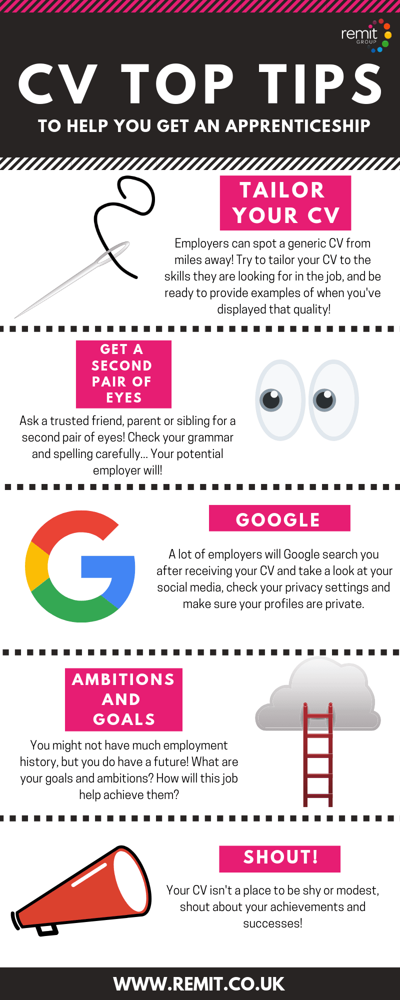

Useful Tips
To ensure your CV makes a positive impact on recruiters, try to avoid the following mistakes.
Avoid cliché phrases
- I am a hardworking team-player
- I always go the extra mile
- I am a strong communicator
- I think outside the box
These phrases do not impress employers.
The problem with these cliché phrases is that they are vague, overused and don’t tell recruiters anything specific about you.
Focus on describing your industry specific skills, experience and achievements, because they are what recruiters will be looking for.
Dealing with gaps in employment
Long periods of unemployment can be off-putting for employers because it simply appears as though you have not been doing anything during that period – unless you state otherwise.
- Studying – With details of qualifications gained or working towards
- Travel – Great to demonstrate planning, organisation and people skills
- Volunteer roles or personal projects – e.g. caring for a family member, working for a community initiative
If you’ve had time out for personal reasons such as a serious illness, then don’t be worried about including it on your CV – employers should not discriminate against youfor it. Just keep the detail light and focus on highlighting your value throughout the rest of your CV.
CV Language
The language used in your CV should be professional, persuasive, descriptive and grammatically perfect throughout.
It should read like a sales brochure for a luxury product; leaving the reader desperate to call you, just in case they miss out on the opportunity of hiring you.
The language used in your CV gives recruiters an insight into your written communication skills and your professionalism, so make it count.
Avoid using basic language, because it makes you look like a basic candidate, when you need to look outstanding.
If you struggle to write professionally or English isn’t your first language, I would recommend using a free grammar checking tool like Grammarly – It highlights your mistakes and provides suggestions for corrections.
Top tips
40 Best Resume Tips 2021